A wearable IoT device integrated with machine learning and computer vision for continuous wrist joint monitoring and guided rehabilitation — designed for home and clinical use.
Bridging the gap between clinical assessment and continuous, home-based joint monitoring.
To develop a portable, low-cost wearable system for continuous upper limb joint monitoring integrated with an intelligent rehabilitation platform.
A structured protocol ensures consistent, clinically meaningful measurements every session.
Sensor data, machine learning, and computer vision unified into a single closed-loop feedback system.
ESP32 reads angular motion from the MPU6050 IMU over I2C and grip force from an FSR through a voltage divider. All readings stream continuously over Wi-Fi to the web platform.
Trained on ~6,000 clinically derived samples. Takes ROM %, normalized grip strength, and swelling score as inputs. Outputs one of four severity classes with confidence percentage.
Live sensor graphs, session logs, ML severity display with confidence, swelling self-assessment, and downloadable PDF patient diagnostic reports.
Detects 21 hand landmarks per frame. Computes joint angles in real time. Valid repetitions counted only when movement matches expected biomechanical patterns.
All electronics housed in a lightweight cardboard enclosure integrated within a comfortable fabric sleeve.
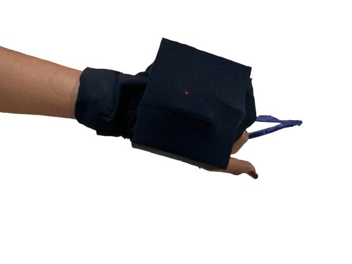
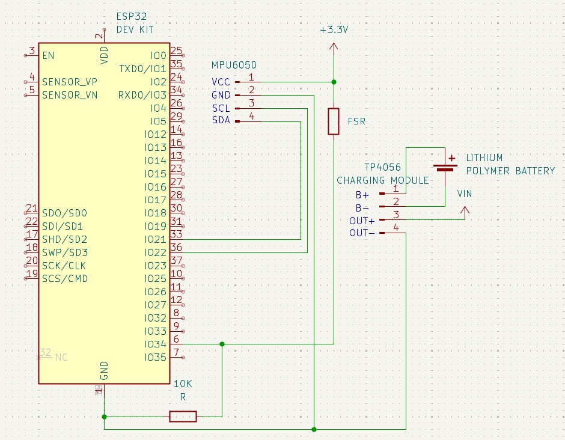
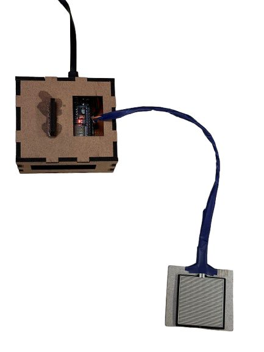
Thresholds derived from clinical guidelines used to label training data and interpret sensor readings.
| Parameter | Threshold | Class |
|---|---|---|
| Grip Strength (N) | > 140 | Normal |
| Grip Strength (N) | 100 – 140 | Mild |
| Grip Strength (N) | 60 – 100 | Moderate |
| Grip Strength (N) | ≤ 60 | Severe |
| Range of Motion (%) | > 90% | Normal |
| Range of Motion (%) | 70 – 90% | Mild |
| Range of Motion (%) | 50 – 70% | Moderate |
| Range of Motion (%) | ≤ 50% | Severe |
| Swelling Score | 0 — None | Normal |
| Swelling Score | 1 — Mild | Mild |
| Swelling Score | 2 — Moderate | Moderate |
| Swelling Score | 3 — Severe | Severe |
One platform for live sensor feeds, ML predictions, swelling assessment, and rehabilitation guidance.
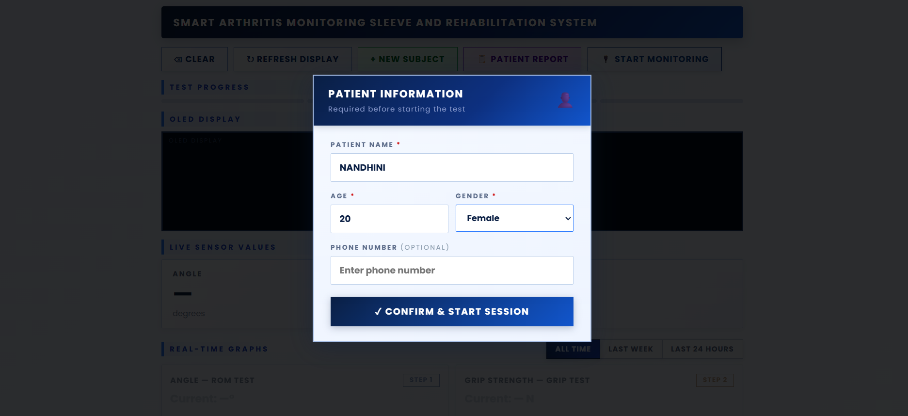
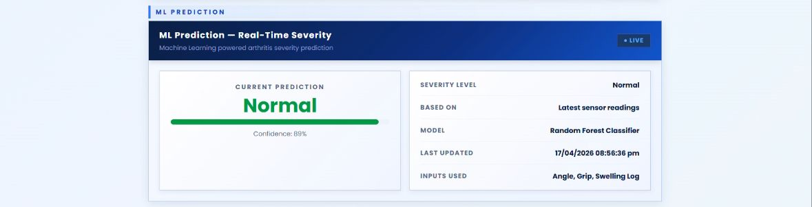
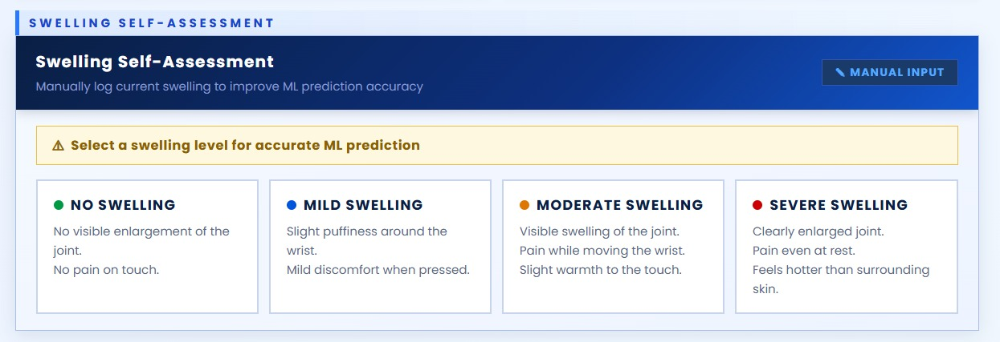
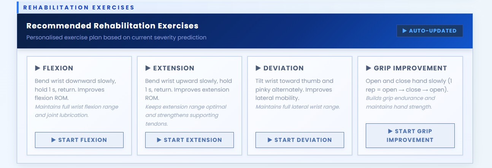
The complete pipeline from wearable sensing to personalized rehabilitation.
Screenshots from live monitoring sessions and computer vision exercise tracking.
Two exercise categories guided in real time by MediaPipe hand tracking to ensure correct form.
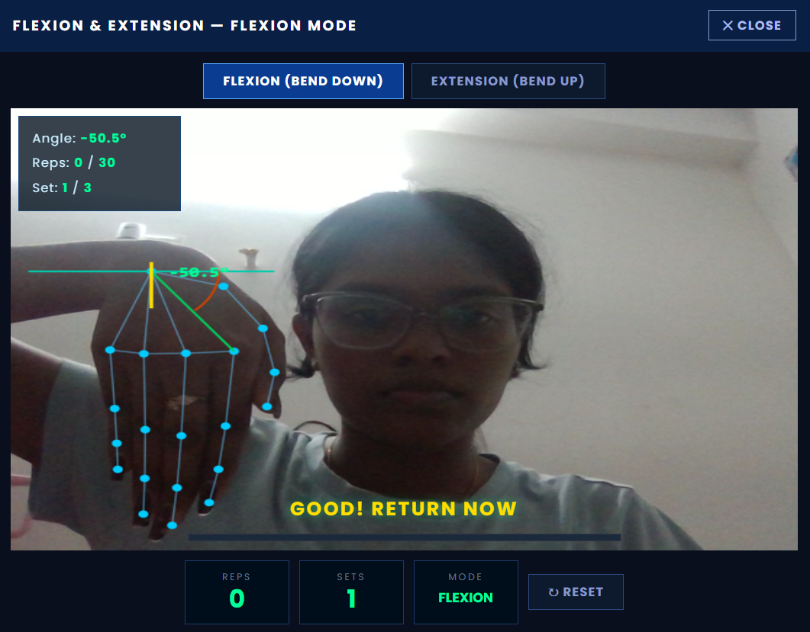
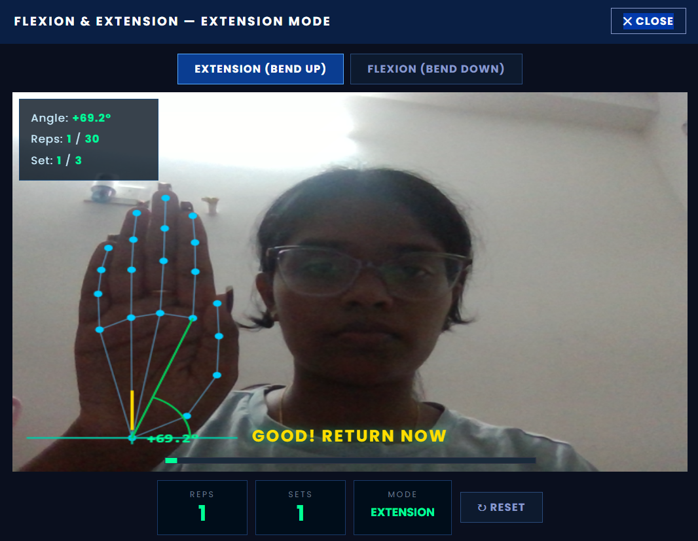
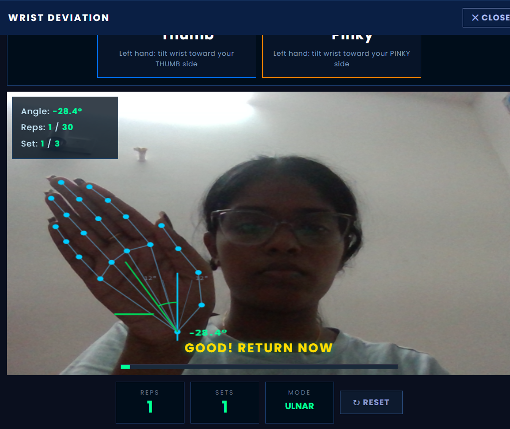
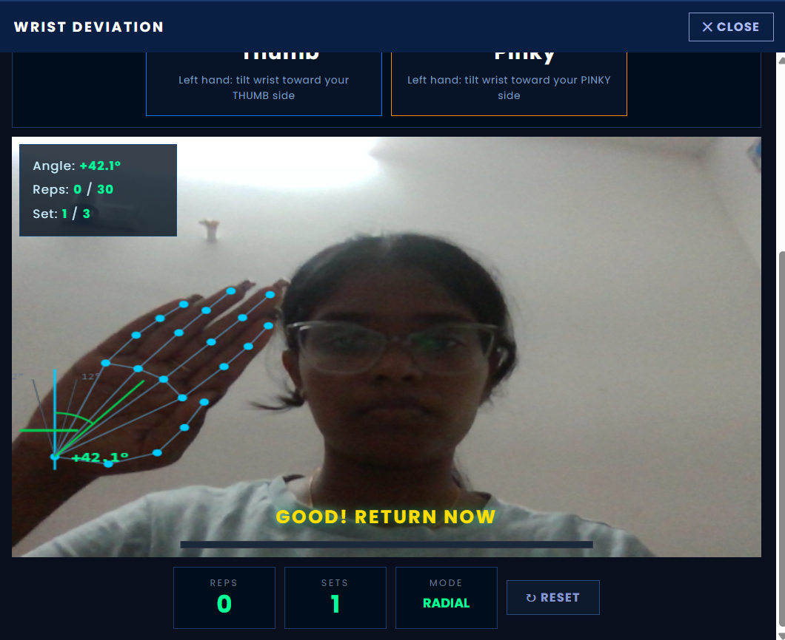
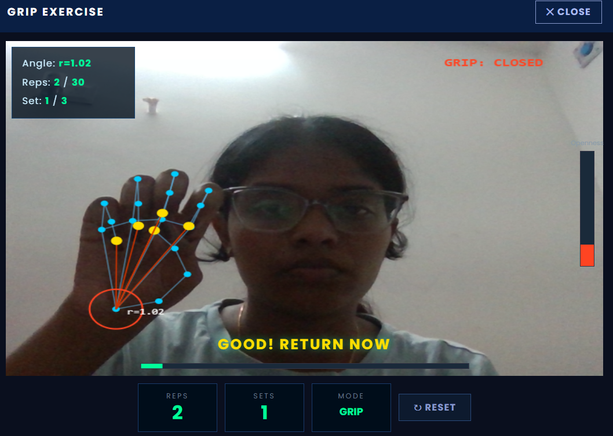
Each session produces a downloadable PDF with full sensor readings, ML prediction, and exercise plan.
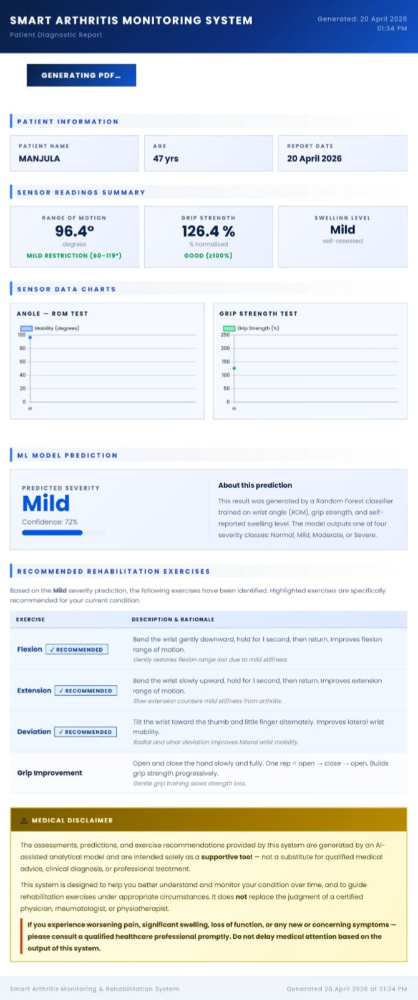
Scan the QR code to access the live project dashboard from any device.